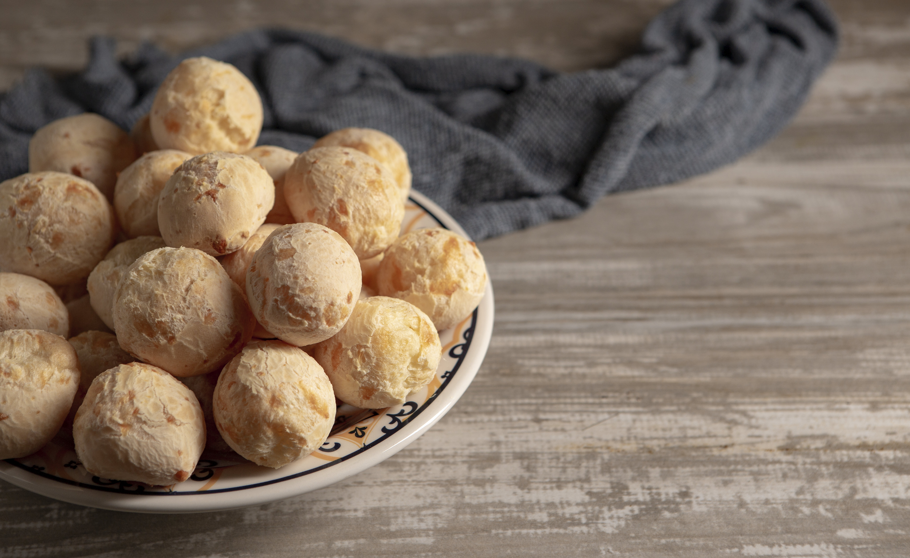
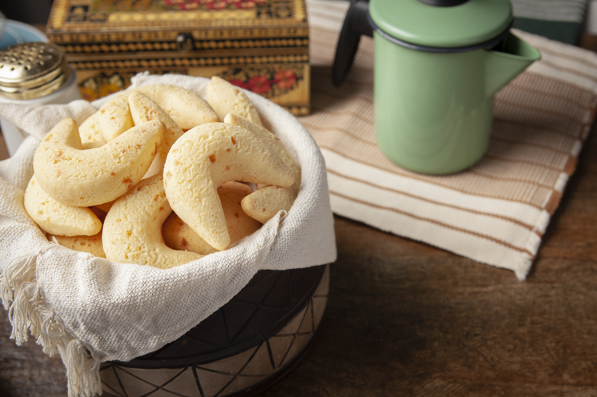
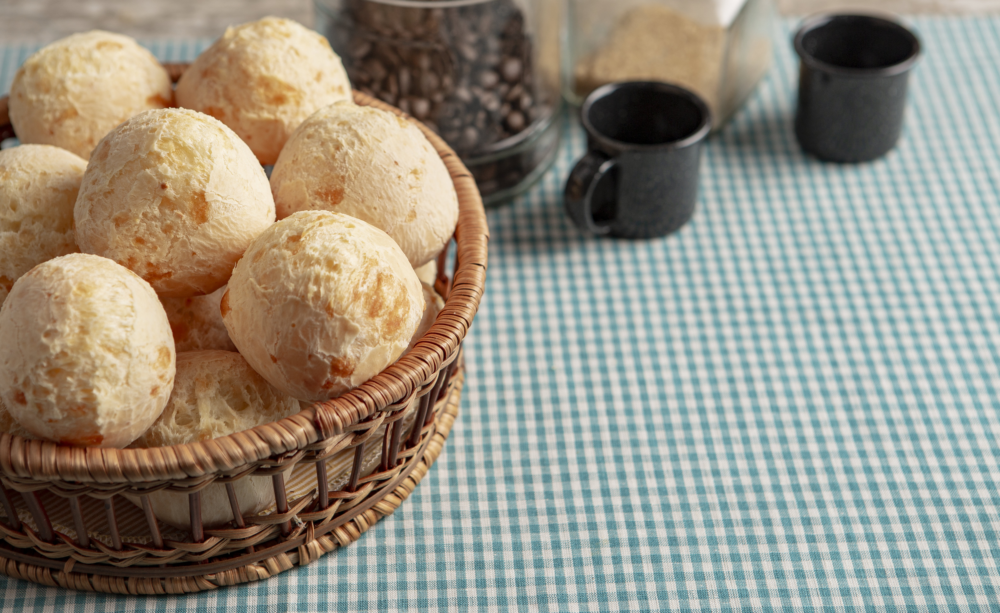
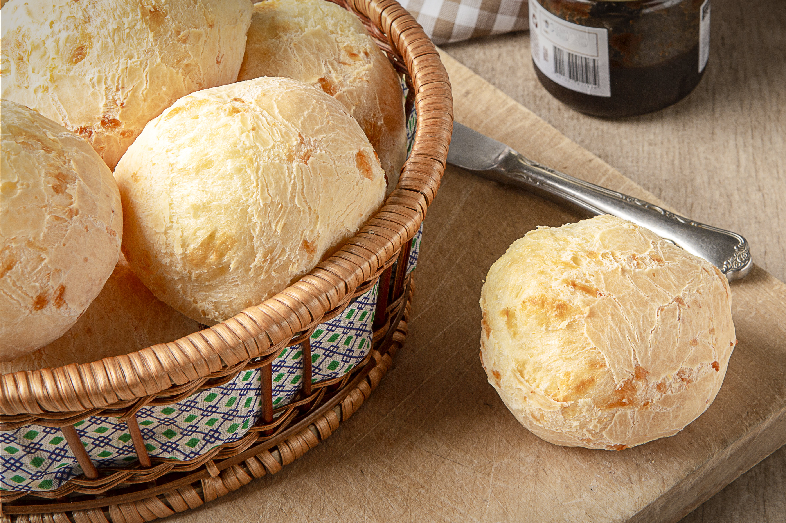

Tradicional
O clássico que nunca sai de moda.
CONHEÇA →Uma linha completa de produtos Sabor & Minas, feita para levar o sabor de Minas para a sua mesa.
O clássico que nunca sai de moda.
CONHEÇA →
Mais sabor e nutrição.
CONHEÇA →
Praticidade em qualquer ocasião.
CONHEÇA →
Uma experiência ainda mais especial.
CONHEÇA →
Ideal para receber bem.
CONHEÇA →
Todo o sabor em pequenas porções.
CONHEÇA →
O legítimo sabor mineiro.
CONHEÇA →
Prático para qualquer hora.
CONHEÇA →
Perfeito para momentos especiais.
CONHEÇA →
Mais sabor para compartilhar.
CONHEÇA →
Crocante por fora, saboroso por dentro.
CONHEÇA →
Aquele sabor de quero mais.
CONHEÇA →
Muito sabor para seus momentos.
CONHEÇA →